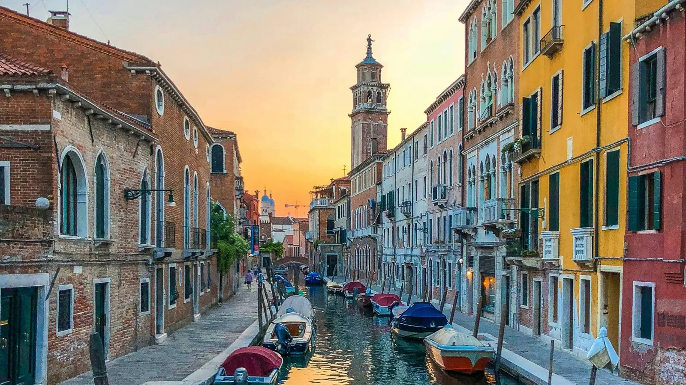

In breve
Il giorno 1 è per i classici: il Canal Grande in vaporetto, Piazza San Marco, la Basilica, il Palazzo Ducale e il Ponte di Rialto, con i cicchetti a Cannaregio la sera. Il giorno 2 è per la laguna: Murano e Burano la mattina, poi Dorsoduro e il tramonto sulle Zattere. Dormi almeno una notte a Venezia: la vedi senza folla e non paghi il ticket d'ingresso.
Come arrivare a Venezia
In treno arrivi a Venezia Santa Lucia, direttamente sul Canal Grande: circa 2h25 da Milano, 2h05 da Firenze e 4 ore da Roma con l'alta velocità. Scendi a Santa Lucia, non a Venezia Mestre (è la stazione di terraferma). Puoi confrontare orari e prezzi dei treni su Omio.
In aereo atterri al Marco Polo (VCE): i bus arrivano a Piazzale Roma in circa 25 minuti, il vaporetto Alilaguna ci mette circa un'ora ma ti lascia più vicino a molti hotel. I voli low cost usano anche Treviso, a circa un'ora di bus.
Giorno 1: San Marco, Rialto e il Canal Grande
- Mattina: dalla stazione prendi la linea 1 del vaporetto lungo tutto il Canal Grande fino a San Marco: è il "giro turistico" più economico di Venezia.
- Basilica di San Marco e Palazzo Ducale: in alta stagione le code sono lunghe, quindi prenota online il biglietto del Palazzo Ducale e scegli un orario di mattina. Dall'interno del palazzo attraversi il Ponte dei Sospiri.
- Pomeriggio: cammina tra le calli fino al Ponte di Rialto. Il mercato di Rialto è aperto la mattina (chiuso la domenica).
- Sera: spostati a Cannaregio per cicchetti e spritz nei bacari lungo la Fondamenta della Misericordia.
Giorno 2: Murano, Burano e Dorsoduro
- Presto la mattina: dalle Fondamente Nove prendi il vaporetto per Murano e guarda le fornaci del vetro, poi prosegui per Burano, l'isola delle case colorate. Parti presto: a mezzogiorno i battelli sono pieni.
- Pomeriggio: tornato in città, esplora Dorsoduro: le Gallerie dell'Accademia, la Collezione Peggy Guggenheim (chiusa il martedì) e la chiesa della Salute.
- Tramonto: passeggia sulle Zattere, davanti alla Giudecca: il tramonto più rilassato di Venezia.
Dove dormire a Venezia
| Zona | Ideale per |
|---|---|
| San Marco | Tutto a piedi, ma la zona più cara e affollata |
| Cannaregio | Vicino alla stazione, atmosfera locale, bacari e prezzi buoni |
| Dorsoduro | Tranquilla, musei, tramonti sulle Zattere |
| Mestre (terraferma) | Molto più economica, 10 minuti in treno o tram, esente anche lei dal ticket d'ingresso |
Nel centro storico i prezzi salgono molto nei weekend e a Carnevale: confronta gli hotel a Venezia oppure guarda a Mestre se il budget è stretto.
Come muoversi
Venezia si gira a piedi: il centro storico è piccolo, ma le calli sono un labirinto, quindi tieni le mappe offline sul telefono. Il vaporetto (ACTV) costa caro come biglietto singolo: se lo prendi più di due o tre volte conviene un abbonamento da 24 o 48 ore. Il traghetto in gondola per attraversare il Canal Grande costa pochi euro ed è un'alternativa simpatica al giro in gondola.
Consigli
- Vieni in un giorno di punta senza dormire a Venezia? Controlla prima il ticket d'ingresso.
- Abbini Venezia ad altre città? Leggi Roma, Firenze e Venezia in 7 giorni e Trenitalia o Italo.
- In autunno e inverno controlla la mattina la previsione dell'acqua alta: Piazza San Marco è la prima ad allagarsi.
Orari e prezzi sono indicativi e possono cambiare: controlla sempre prima di partire.
Organizza il tuo viaggio a Venezia
Alcuni link sono affiliati: se prenoti tramite loro non paghi nulla in più e aiuti 687 a restare gratuito.
I tuoi due giorni a Venezia, in tasca.
In 687 Italy la tappa di Venezia ha il treno giusto, le visite in ordine a piedi e le mappe offline per le calli. NOW ricostruisce il resto della giornata se marea, meteo o folla cambiano i piani.